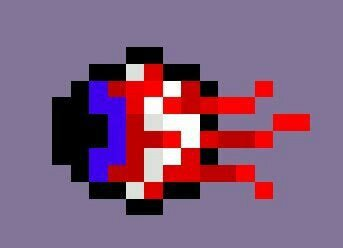
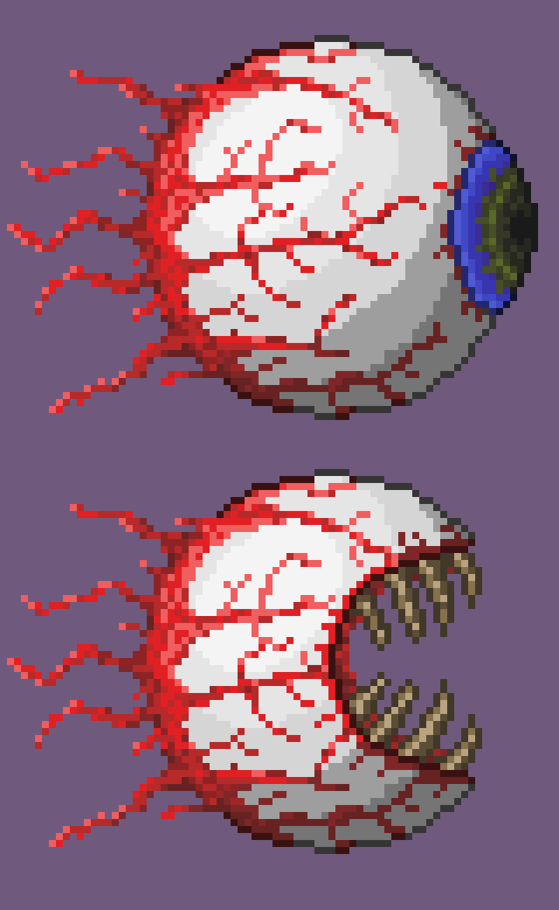

Eye of Cthulhu is likely to be the first boss that a player fights in Terraria, though some players may instead fight King Slime first.
It is a massive demonic eye, similar in design to the 'demon eye' enemies that spawn every night.
At first, the boss will alternate between charging at the player or spawning small demon eyes to attack the player.
When the boss drops to half health, part of the eye will fall away to reveal a large mouth.
The boss will then become increasingly aggressive, gaining speed and attack damage as it loses health, until it is defeated
If this boss has not yet been defeated in this world, then it is possible for the boss to spawn on its own.
If any player in the world has 200+ health, then every night there is a chance for the boss to spawn.
If this happens, a message will pop up in chat saying 'You Feel an Evil Presence Watching You...'.
This gives the player a minute to prepare before the boss actually spawns in.
Alternatively, a player can choose to spawn the boss on their own using an item known as a 'Suspicious Eye' during the night.
Suspicious Eyes can rarely be looted from chests, or they can be crafted.
Crafting them requires 6 lenses, an item obtained by killing demon eyes.
In the cases where there are two numbers separated by a '/', the first number is for phase 1 while the second number is for phase two.
| Difficulty: | Classic | Expert | Master |
|---|---|---|---|
| Health: | 2800 | 3640 | 4641 |
| Attack: | 15 / 23 | 30 / 36 to 40 | 45 / 54 to 60 |
| Defense: | 12 / 0 | 12 / 0 | 12 / 0 |
Photo of the Servant of Cthulhu Enemy spawned by the boss. The Suspicious Eye Item shares the same texture.
Photo of the Eye of Cthulhu, both phases
